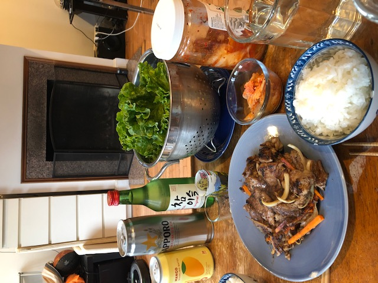

back home

ingredients
-
8 tablespoons of soy sauce
-
2 - 3 cloves of garlic
-
1 Asian of Bosc pear
-
1 - 3 tablespoons of brown sugar
-
2 carrots
-
2 scallions
-
half an onion
-
2 pounds of boneless rib eye or skirt steak
prep
-
The marinate: Puree the pear in a food processor. Mince the garlic. Mix the soy sauce, the pureed pear and minced garlic in a mixing bowl. Add in sugar to taste (add more if pear isnt sweet or little if pear is sweet)
-
The veggies: Cut the carrots, scallions, and onions into thin slices. Julienne them if you wanna get fancy.
-
The beef: Cut the beef into bite sized pieces. Cut against the grain of the beef to make it less chewy.
-
Mix everything together in the mixing bowl. You can use two spoons or your hands.
cook
-
Heat up a pan really hot. Place the beef down and hear it sizzle. The fire should be hot enough to caramelize and create golden crust without burning the marinate. You're looking for a brown glaze on each side.
-
Serve with rice, kimchi, lettuce wraps, soju, and beers.